1. Install the damper cylinder assembly to the frame.
1. Temporarily tighten the clutch slave cylinder to the transmission.
2. Temporarily tighten the orifice valve to the clutch housing.
3. Temporarily tighten the oil pipe to the clutch slave cylinder and the orifice valve.
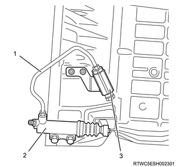
1. Securely tighten the clutch slave cylinder to the transmission.
2. Securely tighten the orifice valve to the clutch housing.
3. Securely tighten the oil pipe to the clutch slave cylinder and the orifice valve.
4. Connect the flexible hose to the orifice valve.
Note
Tightening torque： 34 N・m { 3.5 kgf・m / 25 lb・ft }
Note
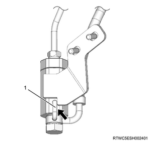
Note
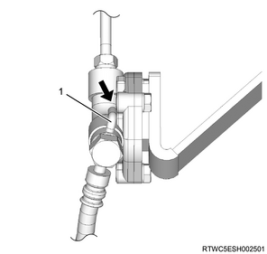
1. Install the clutch master cylinder to the frame.
2. Connect the oil pipe to the clutch master cylinder.
Note
1. Apply the grease to the spring.
Note
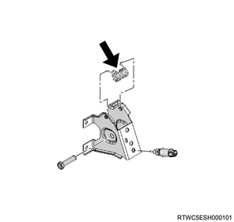
2. Install the clutch pedal to the frame.
3. Apply the grease to the clevis pin.
Note
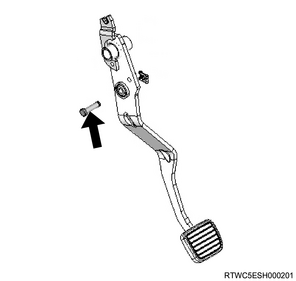
4. Install the clevis pin to the clutch pedal.
5. Install the pin to the clevis pin.
1. Inspect play.
Note
Standard： 5.0 to 15.0 mm { 0.2 to 0.6 in }
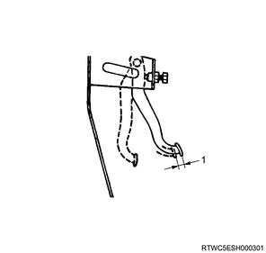
1. Loosen the lock nut using a wrench.
2. Turn the clutch switch.
Note
Clearance： 0.5 to 1.5 mm { 0.020 to 0.059 in }
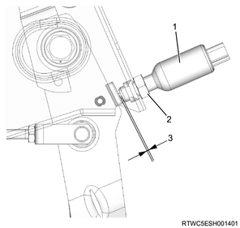
1. Apply the parking brake.
Note
2. Replenish the reservoir tank with the brake fluid.
Note
Caution
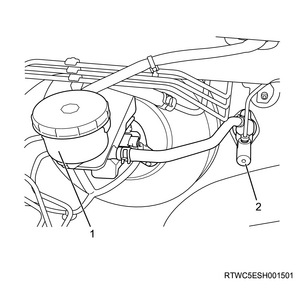
Note
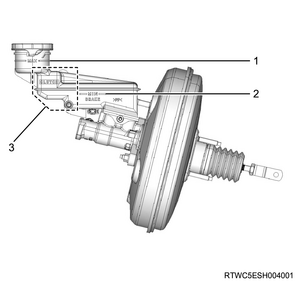
3. Install the plastic tube to the bleeder screw.
4. Install the plastic tube to the container.
Note
5. Press the clutch pedal.
Note
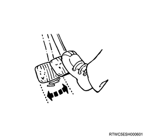
6. Loosen the bleeder screw using a wrench.
Note
7. Tighten the bleeder screw using a wrench.
Note
Caution
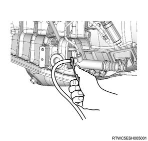